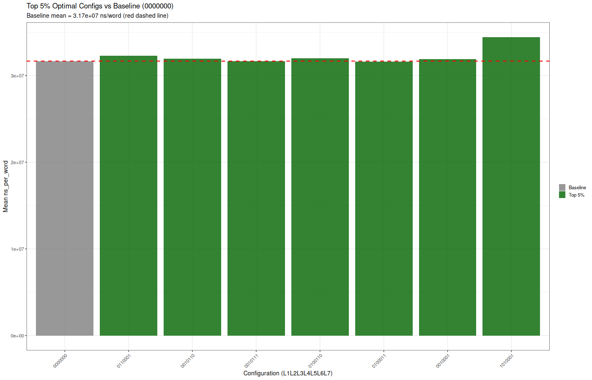

Generated: 2025-11-26 10:50:41.480068
Runs: 38400 | Configurations: 128 | Replicates: 30
Analysis of Variance Table
Response: ns_per_word
Df Sum Sq Mean Sq F value Pr(>F)
L1_heat_tracking 1 7.4240e+16 7.4240e+16 1152.4356 < 2.2e-16 ***
L2_rolling_window 1 4.3707e+14 4.3707e+14 6.7847 0.009198 **
L3_linear_decay 1 1.3341e+15 1.3341e+15 20.7091 5.363e-06 ***
L4_pipelining_metrics 1 2.9975e+18 2.9975e+18 46530.2403 < 2.2e-16 ***
L5_window_inference 1 1.5384e+14 1.5384e+14 2.3880 0.122276
L6_decay_inference 1 4.7490e+13 4.7490e+13 0.7372 0.390564
L7_adaptive_heartrate 1 5.9415e+13 5.9415e+13 0.9223 0.336875
replicate 299 1.6852e+16 5.6362e+13 0.8749 0.941246
Residuals 38093 2.4539e+18 6.4420e+13
---
Signif. codes: 0 ‘***’ 0.001 ‘**’ 0.01 ‘*’ 0.05 ‘.’ 0.1 ‘ ’ 1
Analysis of Variance Table
Response: ns_per_word
Df Sum Sq Mean Sq
L1_heat_tracking 1 7.4240e+16 7.4240e+16
L2_rolling_window 1 4.3707e+14 4.3707e+14
L3_linear_decay 1 1.3341e+15 1.3341e+15
L4_pipelining_metrics 1 2.9975e+18 2.9975e+18
L5_window_inference 1 1.5384e+14 1.5384e+14
L6_decay_inference 1 4.7490e+13 4.7490e+13
L7_adaptive_heartrate 1 5.9415e+13 5.9415e+13
replicate 299 1.6852e+16 5.6362e+13
L1_heat_tracking:L2_rolling_window 1 3.1983e+14 3.1983e+14
L1_heat_tracking:L3_linear_decay 1 2.5183e+15 2.5183e+15
L1_heat_tracking:L4_pipelining_metrics 1 1.0587e+15 1.0587e+15
L1_heat_tracking:L5_window_inference 1 5.1359e+13 5.1359e+13
L1_heat_tracking:L6_decay_inference 1 3.3666e+13 3.3666e+13
L1_heat_tracking:L7_adaptive_heartrate 1 2.0141e+14 2.0141e+14
L2_rolling_window:L3_linear_decay 1 1.0882e+15 1.0882e+15
L2_rolling_window:L4_pipelining_metrics 1 5.2174e+14 5.2174e+14
L2_rolling_window:L5_window_inference 1 1.5498e+15 1.5498e+15
L2_rolling_window:L6_decay_inference 1 3.7362e+12 3.7362e+12
L2_rolling_window:L7_adaptive_heartrate 1 1.9174e+14 1.9174e+14
L3_linear_decay:L4_pipelining_metrics 1 6.5727e+14 6.5727e+14
L3_linear_decay:L5_window_inference 1 2.7786e+12 2.7786e+12
L3_linear_decay:L6_decay_inference 1 7.1187e+10 7.1187e+10
L3_linear_decay:L7_adaptive_heartrate 1 1.9866e+13 1.9866e+13
L4_pipelining_metrics:L5_window_inference 1 4.8622e+14 4.8622e+14
L4_pipelining_metrics:L6_decay_inference 1 6.9978e+13 6.9978e+13
L4_pipelining_metrics:L7_adaptive_heartrate 1 1.7744e+13 1.7744e+13
L5_window_inference:L6_decay_inference 1 2.5715e+15 2.5715e+15
L5_window_inference:L7_adaptive_heartrate 1 5.5548e+15 5.5548e+15
L6_decay_inference:L7_adaptive_heartrate 1 2.0477e+14 2.0477e+14
Residuals 38072 2.4368e+18 6.4006e+13
F value Pr(>F)
L1_heat_tracking 1159.8939 < 2.2e-16 ***
L2_rolling_window 6.8286 0.008974 **
L3_linear_decay 20.8431 5.000e-06 ***
L4_pipelining_metrics 46831.3723 < 2.2e-16 ***
L5_window_inference 2.4035 0.121074
L6_decay_inference 0.7420 0.389035
L7_adaptive_heartrate 0.9283 0.335316
replicate 0.8806 0.931891
L1_heat_tracking:L2_rolling_window 4.9968 0.025399 *
L1_heat_tracking:L3_linear_decay 39.3452 3.589e-10 ***
L1_heat_tracking:L4_pipelining_metrics 16.5406 4.772e-05 ***
L1_heat_tracking:L5_window_inference 0.8024 0.370377
L1_heat_tracking:L6_decay_inference 0.5260 0.468302
L1_heat_tracking:L7_adaptive_heartrate 3.1468 0.076085 .
L2_rolling_window:L3_linear_decay 17.0012 3.743e-05 ***
L2_rolling_window:L4_pipelining_metrics 8.1514 0.004305 **
L2_rolling_window:L5_window_inference 24.2128 8.662e-07 ***
L2_rolling_window:L6_decay_inference 0.0584 0.809088
L2_rolling_window:L7_adaptive_heartrate 2.9957 0.083492 .
L3_linear_decay:L4_pipelining_metrics 10.2689 0.001354 **
L3_linear_decay:L5_window_inference 0.0434 0.834953
L3_linear_decay:L6_decay_inference 0.0011 0.973396
L3_linear_decay:L7_adaptive_heartrate 0.3104 0.577449
L4_pipelining_metrics:L5_window_inference 7.5965 0.005851 **
L4_pipelining_metrics:L6_decay_inference 1.0933 0.295747
L4_pipelining_metrics:L7_adaptive_heartrate 0.2772 0.598533
L5_window_inference:L6_decay_inference 40.1755 2.347e-10 ***
L5_window_inference:L7_adaptive_heartrate 86.7853 < 2.2e-16 ***
L6_decay_inference:L7_adaptive_heartrate 3.1993 0.073680 .
Residuals
---
Signif. codes: 0 ‘***’ 0.001 ‘**’ 0.01 ‘*’ 0.05 ‘.’ 0.1 ‘ ’ 1
Full data: all_128_configurations.csv
The optimal performer is NOT just the fastest - it's the configuration that achieves both fast execution AND steady-state behavior, representing the true optimal dynamic system equilibrium.
Lower-left corner = Pareto-optimal (fast AND stable). Top 5% configs circled in red.
Green shaded region shows the top 5% of configurations by optimality score.
Component scores for each top 5% config: Speed, Stability, and Overall.
Which feedback loops are over/under-represented in optimal configurations?
# A tibble: 7 × 5 config_bits mean_ns cv_pct optimality_score optimality_percentile <chr> <dbl> <dbl> <dbl> <dbl> 1 0110001 32293075. 14.4 0.0535 100 2 0010110 31962118. 14.6 0.0654 99.2 3 0010111 31673508. 14.8 0.0808 98.4 4 0100110 32002506. 15.1 0.102 97.7 5 0100011 31592404. 15.1 0.103 96.9 6 0010001 31921582. 15.3 0.118 96.1 7 1010001 34423368. 15.0 0.139 95.3
Full ranking: optimal_configurations_ranked.csv
Baseline config (0000000): mean = 3.17e+07 ns/word, CV = 17.34%
 config_bits mean_ns speedup_vs_baseline cv_pct cv_improvement
t...1 0110001 32293075 -1.960683620 14.39137 2.945347
t...2 0010110 31962118 -0.915735239 14.61180 2.724917
t...3 0010111 31673508 -0.004490247 14.83188 2.504837
t...4 0100110 32002506 -1.043253850 15.10276 2.233964
t...5 0100011 31592404 0.251583952 15.12602 2.210701
t...6 0010001 31921582 -0.787748632 15.30973 2.026988
t...7 1010001 34423368 -8.686774250 15.01970 2.317025
t_pvalue t_significant
t...1 1.354071e-01 FALSE
t...2 4.861458e-01 FALSE
t...3 9.972814e-01 FALSE
t...4 4.343161e-01 FALSE
t...5 8.496873e-01 FALSE
t...6 5.568347e-01 FALSE
t...7 5.175982e-10 TRUE
Full comparison: top5pct_vs_baseline.csv


ANOVA results: interaction_anova_results.csv


# A tibble: 59 × 5 metric n n_na n_nan na_prop <chr> <int> <int> <int> <dbl> 1 L1_heat 38400 0 0 0 2 L2_window 38400 0 0 0 3 L3_decay 38400 0 0 0 4 L4_pipeline 38400 0 0 0 5 L5_win_inf 38400 0 0 0 6 L6_decay_inf 38400 0 0 0 7 L7_heartrate 38400 0 0 0 8 total_lookups 38400 0 0 0 9 cache_hits 38400 0 0 0 10 cache_hit_pct 38400 0 0 0 # ℹ 49 more rows